|
If I hurt you，that's not what I wanted.
|
简易游戏修改器制作： 先介绍一下游戏： Heavy Weapon Deluxe 这是一款由Popcap出品的非常出色的街机风格的打飞机游戏，画面精美，操作感强。玩家用鼠标控制一辆坦克，在前进的过程中消灭敌人，完成任务后有丰富的奖励。 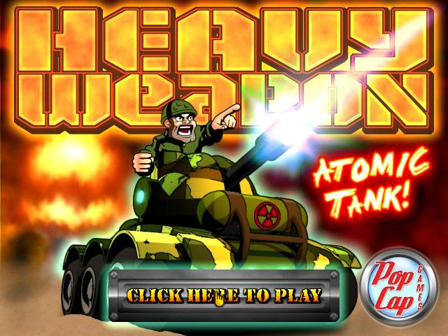1984年，某个叫Red Star的国家突然发动全球的袭击，盟军抵挡不住了，派出了秘密武器Atomic Tank。游戏的政治色彩非常浓厚，甚至可以看见疑似斯大林头像和列宁的雕像。 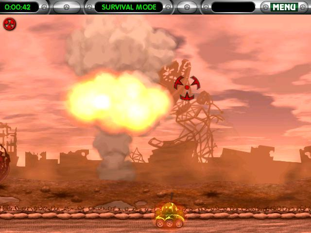游戏画面壮丽，战斗激烈 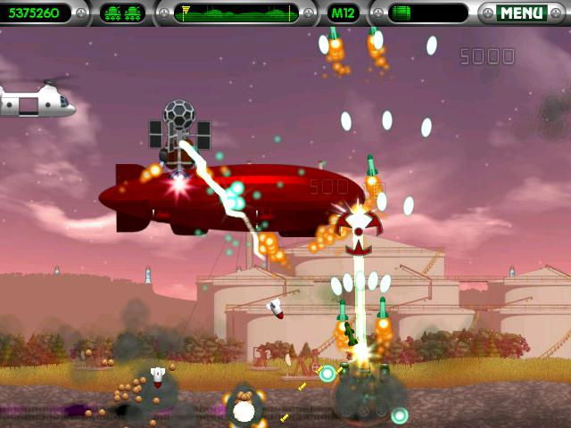然而，难度却很大，即使是在任务模式，你也只有3条命，又没有“上上下下左右左右baba”，最终难逃一死。 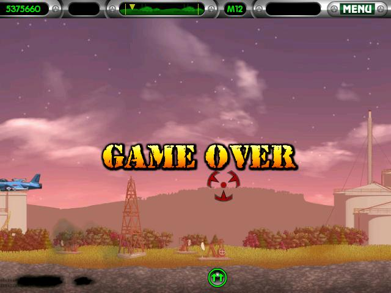应该写一个外挂了 打开cheat Engine，非常实用的工具，因为可以有多种方式扫描内存，能帮助你迅速找到一些变量。 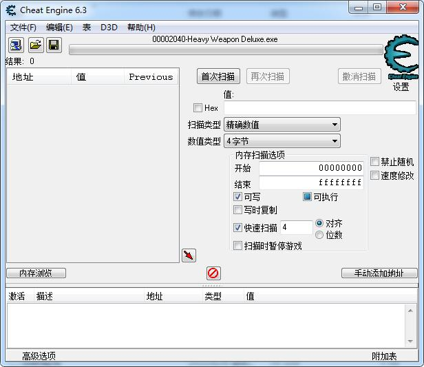左上角的5344700是分数信息，旁边的两辆坦克标志告诉你还有2条命，我们可以直接搜索精确数值=5344700的DWORD值，因为其他值的重复命中的概率会很小。 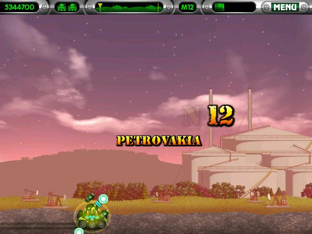果然只有两个地址 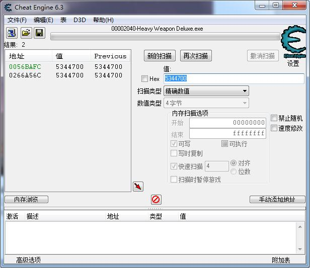我把上一个地址的数值改成12345678以后进了游戏 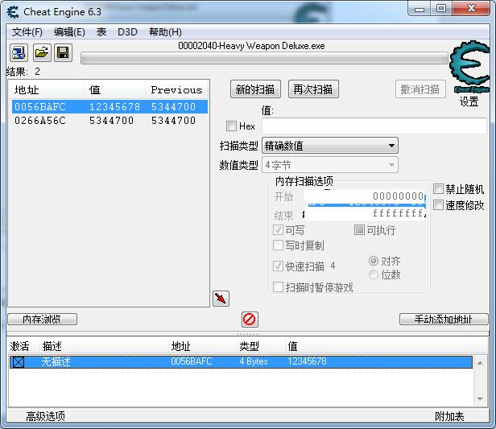分数发生了改变，所以0056BAFC就是分数的地址，不过我们要改的是血，不是分数，血的信息应该存在0056BAFC附近。 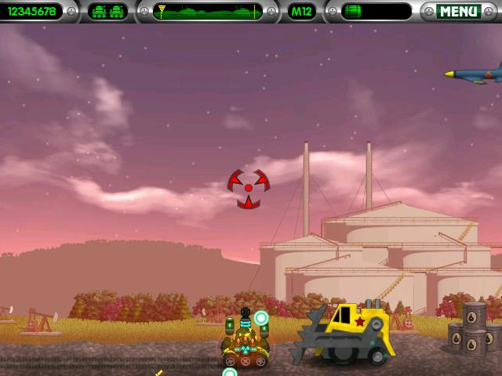于是我自杀了两次，搜索减少的数值，结果如上图所示，显然0056BB04是我们要的结果。因为他靠近刚才搜到的分数的地址（他们都应该是存在栈里的），而且当我把他改成2的时候，返回游戏时真的多了两条命，嘿嘿嘿。 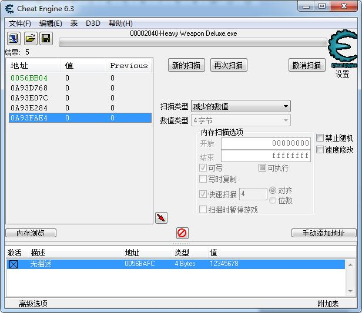怎么修改呢？可以直接用（"Heavy Weapon Deluxe.exe"+16BB04） = 2；然后搞个轮询或者键盘响应比如按空格变成2条命或者每隔一秒设置成2条命 不是很好，轮询浪费资源，而且万一一秒钟就死了2次怎么办？这种方式也有其他的问题"Heavy Weapon Deluxe.exe"+16BB04不一定每次都存这个变量。在面向对象的游戏里，大多数变量都在堆里，这么寻址只能找栈里的变量，而且比如你在进了别的界面的时候（函数）修改了这个地址的值，那你可能就修改了其他的变量的值了，经常造成的结果是什么都没发生和程序崩溃。 不过，我们可以改内存里的代码段，每次被打死的时候，肯定有个函数会把你的血量-1，我们可以改成不动，这样就变成无限血了，而且代码段在游戏开始的时候就加载进去了，位置比较固定。 右键，“找出是什么改写了这个地址”，是空的，因为你还没有改写这个地址。 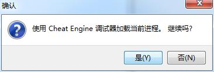 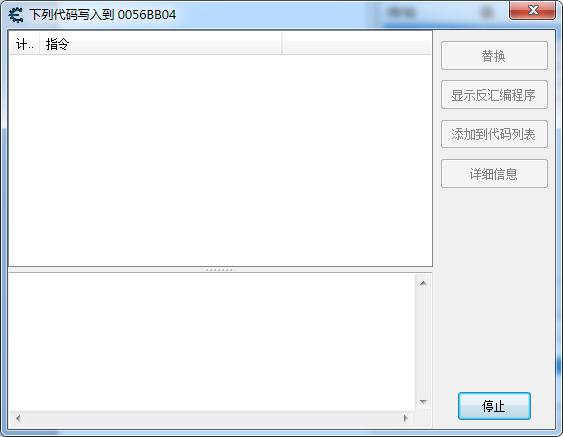很简单，进入游戏，自杀一次就行了 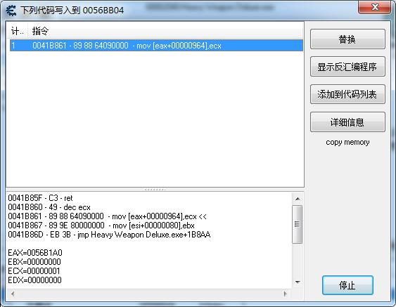
果然，死了不扣血了，连死了3次都没扣血，我情不自禁地露出了邪恶的笑容 修改成功！关掉了游戏重复上面的过程，发现代码段的位置并没有改变，现在只要打开very slow studio写一个脚本就可以了。
也许你想要进行一些更复杂的操作也没有问题，你可以把你要修改的地方的操作码改成jmp somewhere，somewhere是你的作弊器的进程的内存的某处， 然后你在作弊器进程里存一些你想做的操作码到内存里，在jmp回去。如果你喜欢图形界面，你也可以自己写一个图形界面。 这游戏原来有19关，我之前一般只能打到5到6关，展示一下最终的老怪 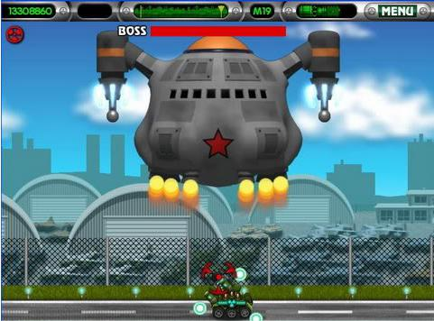 |